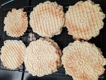

Pizzelles

Description
A traditional Italian cookie made using a fancy decorative iron.
Traditionally, the recipe calls for anise, but you may like it with vanilla or even chocolate.
Ingredients
- 3 large eggs
- 3/4 cup white sugar
- 1/2 cup butter, melted
- 1 tbsp anise extract
- 1 3/4 cup all purpose flour
- 2 tsp baking powder
- 2 tsp vegetable oil
- (Optional) Powdered sugar
Steps
- Blend eggs and sugar together.
Add butter & vanilla.
Slowly add flour until batter is smooth.
- Drop batter by tablespoons onto iron, bake for about 30-45 seconds
- Remove from iron to cooling rack, sprinkle with powdered sugar